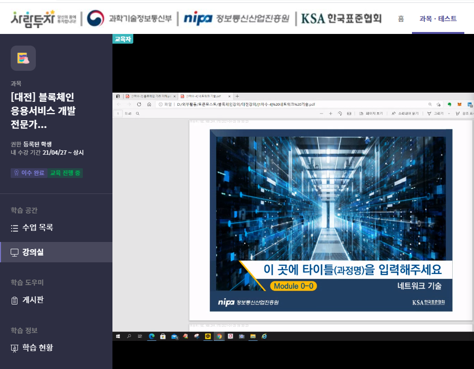
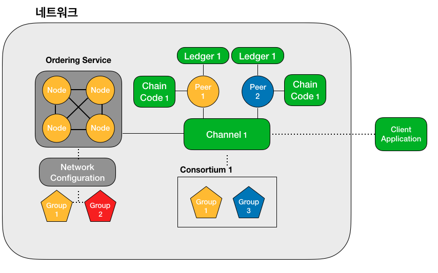

진행중인 프로젝트
현재 캡스톤 디자인 프로젝트로 IoT 블록체인 보안 프로젝트를 진행하고 있다.
- 블록체인이란?
‘블록체인(Block Chain)’ 기술에서 블록(Block)에는 일정 시간 동안 확정된 거래 내역이 담긴다. 온라인에서 거래 내용이 담긴 블록이 형성되는 것이다. 거래 내역을 결정하는 주체는 사용자다. 이 블록은 네트워크에 있는 모든 참여자에게 전송된다. 참여자들은 해당 거래의 타당성 여부를 확인한다. 승인된 블록만이 기존 블록체인에 연결되면서 송금이 이루어진다. 신용 기반이 아니다. 시스템으로 네트워크를 구성, 제3자가 거래를 보증하지 않고도 거래 당사자끼리 가치를 교환할 수 있다는 것이 블록체인 구상이다.
비트코인 기술을 처음 고안한 사람은 ‘사토시나카모토’라는 개발자다. 비트코인은 생긴 지 5년 만에 시가총액으로 세계 100대 화폐 안에 들어갈 정도로 성장했다. 그는 ‘비트코인: P2P 전자화폐 시스템’이라는 논문에서 비트코인을 전적으로 거래 당사자 사이에서만 오가는 전자화폐로 정의했다. P2P(Peer to Peer) 네트워크를 이용해 이중 지불을 막아 준다는 것이다. 즉, P2P 네트워크를 통해 이중 지불을 막는 데 쓰이는 기술이 바로 블록체인이다.
[네이버 지식백과] 블록체인 [Block Chain] (ICT 시사상식 2017, 2016.12.20)
- 현재 진행상황
ICT 블록체인 개발자 과정(대전)을 수료하고 있으며 평일 오후 6시 반부터 10시 반까지 수강중이다.
(매우 힘들다..)
블록체인에 관하여 private,pulic 개념 등을 배우고 있으며 아직 개발 과정에는 들어가지 않았다.
(2021-05-08 기준)

- 프로젝트 진행계획
현재 수강중인 과정이 끝나면 하이퍼레저 페브릭을 이용하여 서버를 구축하고 안드로이드 어플을 개발하여 테스트 한 후 파워포인트 제작, 발표할 예정입니다.
스마트팩토리의 IIoT기기를 Private블록체인을 통해 인증된 사용자만 접근할 수 있도록 하여 정상적인 동작을 방해하는 공격을 막을 수 있도록 하고, 블록체인을 이용한 네트워크 구성으로 해킹으로 인한 데이터의 위·변조를 막을 수 있도록 목표를 설정하여 개발을 진행 한다. 하나의 블록체인 네트워크 안의 연결된 사용자들로만 블록체인 구성원으로 인정하는 것을 가장 큰 특징으로 한다. 외부 네트워크에서 접근하는 사용자들은 접근이 불가능하고, 데이터의 위·변조를 불가능 하게 하여 보안성을 높이는 것을 목표로 개발을 진행 한다. -캡스톤 지원서 중 발췌
